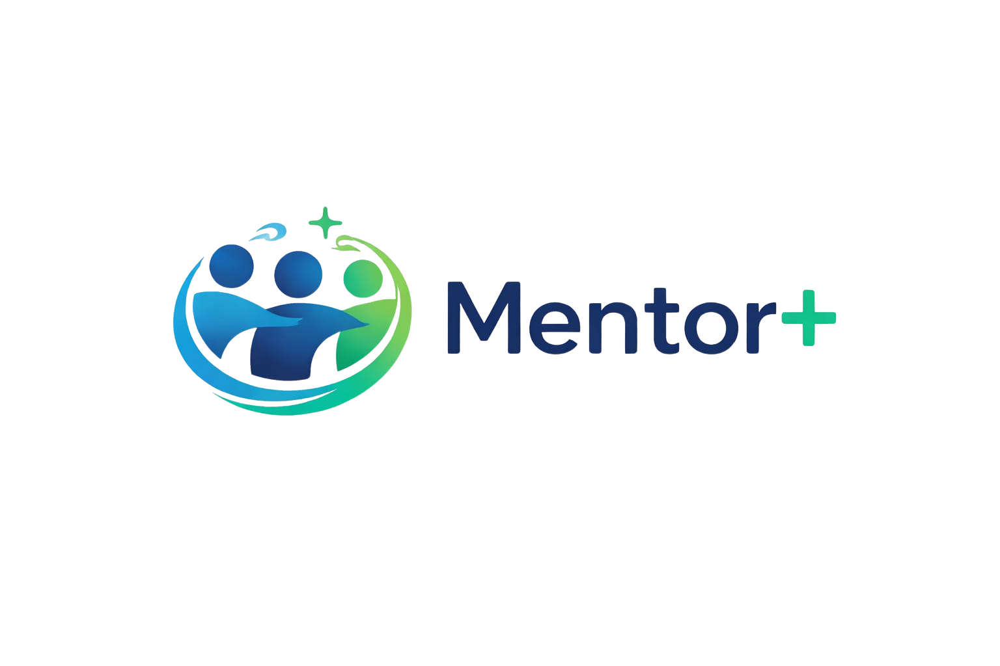
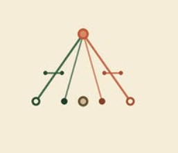
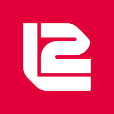

Hola, soy Adriano 👋
Desarrollador Backend y Líder de Soporte Digital con más de 7 años de experiencia en tecnología. Especializado en .NET, T-SQL, API integrations y análisis de datos. Actualmente lidero el equipo de soporte en Banco Coinag S.A., con experiencia previa en SG Financial Technology – Ágil Pagos y en La Segunda Seguros CLSG.
Soy cofundador de Alcana Labs, una software factory que construimos junto a mi socia, donde desarrollamos soluciones web y apps a medida. Nuestro primer producto propio es Mentor+, una plataforma institucional de mentorías académicas ya en producción en mentormas.com.ar.
Mi misión es construir software que sea eficiente, escalable y bien documentado. Creo en las buenas prácticas, en los equipos colaborativos y en seguir aprendiendo todos los días.
Trabajos Destacados

Mentor+
Plataforma institucional de mentorías académicas en producción. Login con DNI, gestión de roles (alumno, mentor, admin), agenda y reservas. Desarrollada junto a mi socia como proyecto real.

Alcana Labs
Software factory cofundada junto a mi socia. Desarrollo web, apps y soluciones digitales a medida. "Hacemos software con alma. Elegimos crear."
Grupo Coinag
Más de 4 años en el grupo. Desarrollo de APIs bancarias integradas con billeteras virtuales, cámaras compensadoras y servicios fintech externos. Stored procedures complejos en T-SQL, flujos de onboarding, gestión de CBU/CVU y servicios en producción. Actualmente Líder de Soporte Digital en Banco Coinag S.A.

La Segunda Seguros CLSG
Analista de Soluciones Informáticas y Analista en Gestión Documental. Relevamiento de requerimientos, análisis funcional y administración de plataformas como Podio, Athento y ZOHO Analytics.
Stack Técnico
| Categoría | Tecnologías | Nivel |
|---|---|---|
| Backend | .NET 3.1 / .NET 8, C#, ASP.NET Web API | Senior |
| Base de Datos | T-SQL, Procedimientos almacenados T-SQL, SQL Server (SSMS), MySQL | Senior |
| APIs & Integración | Desarrollo de API, ASP.NET Web API, Resolución de incidencias | Senior |
| Data & Analytics | Análisis de Big Data, Análisis de datos técnicos | Mid |
| DevOps & Tools | Git, GitHub, GitLab, JIRA, Postman | Mid |
| Liderazgo | Liderazgo de equipos, Scrum, Kanban, Adaptación | Mid |
| Frontend | HTML, CSS, Bootstrap | Mid |
| Quiero aprender | React, TypeScript, Docker, AWS ☁️ (certificación en curso) | En camino |
| Hobbies | Cine, Marvel, series tech, gaming | Pasión |
Certificaciones
- 🎓 Técnico Superior en Desarrollo de Software – IFTS N.º 29 (2024-act.)
- 🎓 Técnico Superior en Desarrollo de Software y Multimedia – Esc. Sup. N.º 49 (2020-2022)
- 💻 Desarrollador Web Full Stack Jr – Argentina Programa (2022)
- 📱 Desarrollador de Aplicaciones Móviles – Comunidad IT (2021)
- 🧠 #SéProgramar – Mumuki (2021)
- 🌐 Inglés Técnico para Desarrolladores – Argentina Programa (2022)
- 🌐 Inglés Nivel 1 – CUI (2023)
- 🐘 PHP y MySQL Server – UTN
Hablemos 🤝
¿Tenés un proyecto en mente o querés saber más sobre mi trabajo? Escribime.
Las mejores películas de la historia
Según el criterio absolutamente objetivo //Adriano Caloni
Avengers: Endgame
El cierre épico de 10 años de historia del MCU. Ver a todos los héroes juntos en batalla es uno de los momentos más impactantes del cine moderno. "Avengers... assemble."
Harry Potter y las Reliquias de la Muerte
El cierre perfecto de una saga generacional. Toda la saga de Harry Potter es un mundo en sí mismo, pero la batalla final en Hogwarts es pura magia cinematográfica. Imposible elegir solo una parte.
The Avengers
La película que demostró que el universo compartido funcionaba. Ver a Iron Man, Thor, Hulk y Cap juntos por primera vez fue un momento histórico que cambió el cine de superhéroes para siempre.